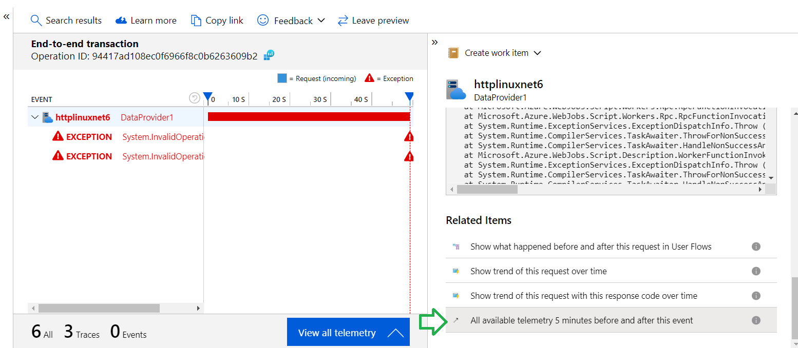
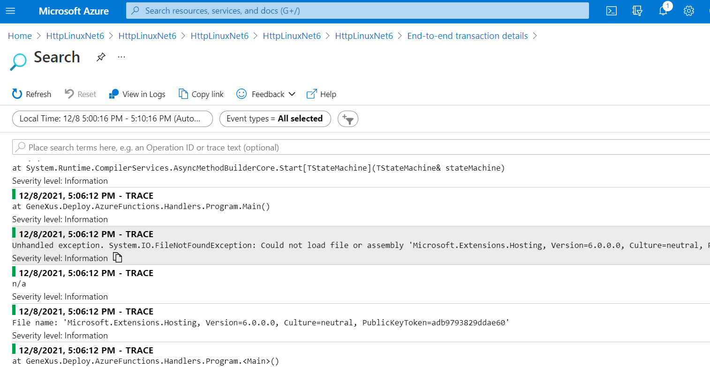
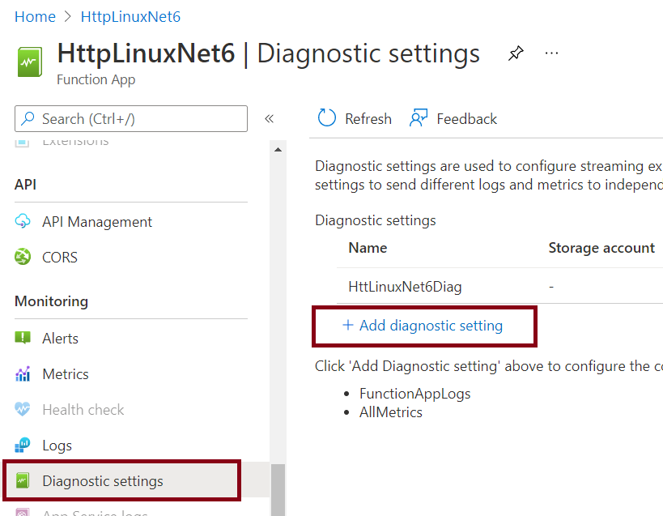
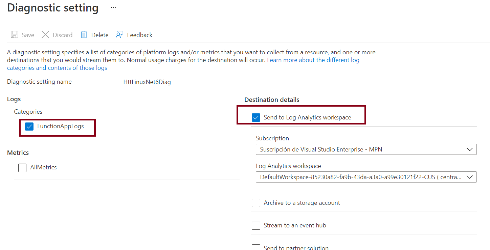
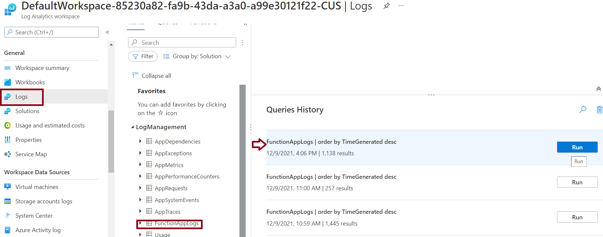
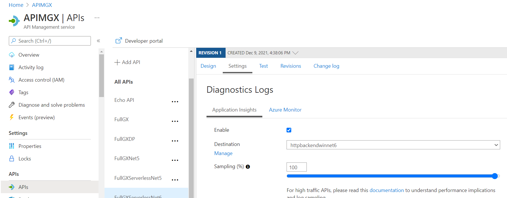
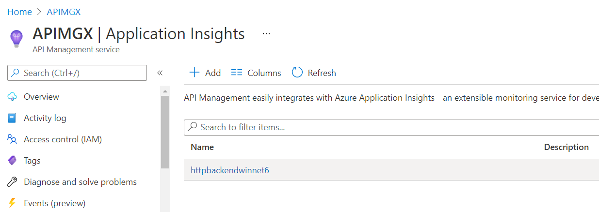

HowTo: Monitoring Azure Functions
Azure Monitor is the native monitoring solution for Microsoft Azure aimed at helping users maximize the availability and performance of the applications. Azure Monitor provides users with full observability into their cloud and on-premises environments, collecting and analyzing data from a variety of sources before storing the information to be later processed (similar to Amazon CloudWatch).
Application Insights is a feature of Azure Monitor, used to monitor your live applications. It will automatically detect performance anomalies, and includes analytics tools to help you diagnose issues.
Summary
Using Application Insigths
You can create an Application Insights instance when you create your function app. In this case, the instrumentation key required for the integration is already set as an application setting named APPINSIGHTS_INSTRUMENTATIONKEY. If your function app doesn't have the instrumentation key set, you need to enable Application Insights integration.
One example of use of Application Insights is if you see an error in the monitor, you can use Application Insights to get the complete stack and detail of the error.

Moreover, you can get detailed information if you go through the option "All available telemetry 5 minutes before and after this event"


Check the logs generated by the GeneXus application
With Application Insights integration enabled, telemetry data is sent to your connected Application Insights instance. This data includes logs generated by GeneXus.
Go through Diagnostic Settings in the Azure portal, and add a Diagnostic setting.

Select Categories "FuntionAppLogs" and Destination details "Send to log analytics workspace".

Important note: In GeneXus, you have to configure the Log output property to "Console Appender" value.
Then you can check the logs going through the Log Analytics workspace you selected, "Logs" option at the left hand side menu, and runnning the query over the FunctionAppLogs table.

For detailed information on this, see Monitoring Azure Functions with Azure monitor logs.
Using Application Insights and Azure Monitor in API Management APis
Note that you can also active Application Insights for API Management


See also
| Backlinks | ||
| Toc:Application Deployment tool | Azure Functions | How to: create a GeneXus procedure to be deployed as an Azure Function |